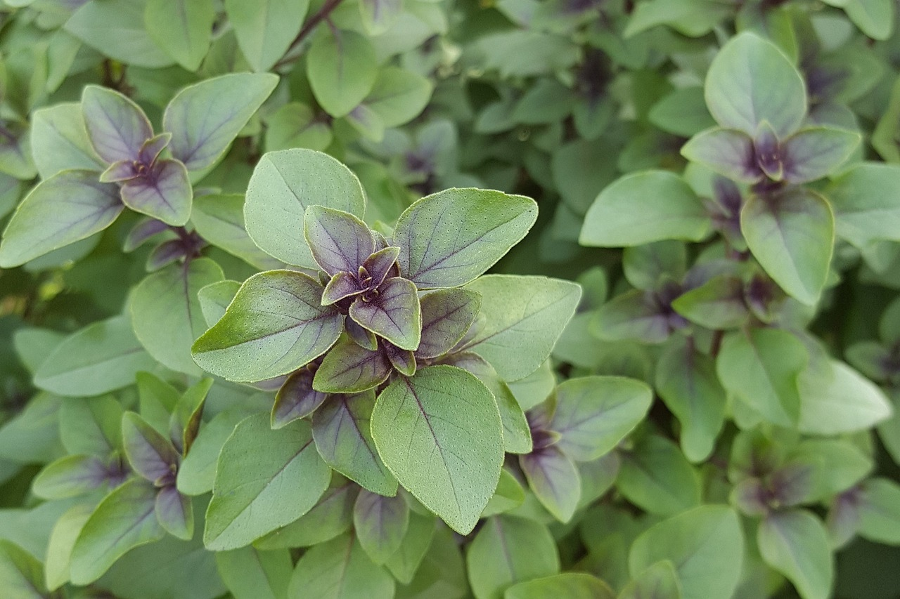
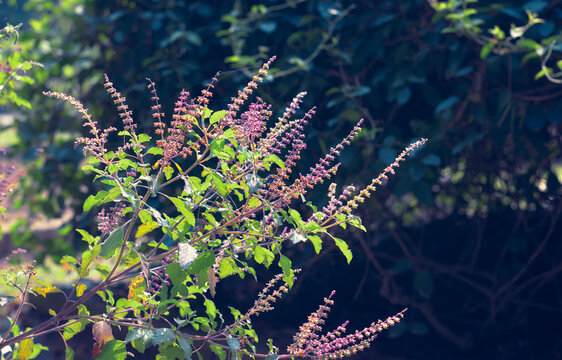

Tulsi plant



For VR experience of plant's 3D model
360 panorama view is available click on full screen icon to enable full screen.
Scientific name |
Ocimum sanctum |
Common name |
Tulsi |
Family |
Lamiaceae family[1] |
Genus |
Ocimum |
Species |
160 |
Class |
Magnoliopsida |
Kingdom |
plantae |
Habitat |
aromatic perennial plant |
Native enviornment |
Southeast Asian tropics |
English
Tulsi is an aromatic shrub in the basil family Lamiaceae (tribe ocimeae) that is thought to have originated in north central India and now grows native throughout the eastern world tropics.[2] Within Ayurveda, tulsi is known as “The Incomparable One”, “Mother Medicine of Nature” and “The Queen of Herbs”.Tulsi acts a mild diuretic & detoxifying agent which helps in lowering the uric acid levels in the body. Acetic acid present in holy basil helps in the breakdown of the stones. Tulsi is a natural headache reliever which can also relieve migraine pain.
Hindi
तुलसी - (ऑसीमम सैक्टम) एक द्विबीजपत्री तथा शाकीय, औषधीय पौधा है। यह झाड़ी के रूप में उगता है और १ से ३ फुट ऊँचा होता है। इसकी पत्तियाँ बैंगनी आभा वाली हल्के रोएँ से ढकी होती हैं। पत्तियाँ १ से २ इंच लम्बी सुगंधित और अंडाकार या आयताकार होती हैं।तुलसी एक औषधीय पौधा है जिसमें विटामिन (Vitamin) और खनिज प्रचुर मात्रा में पाए जाते हैं। सभी रोगों को दूर करने और शारीरिक शक्ति बढ़ाने वाले गुणों से भरपूर इस औषधीय पौधे को प्रत्यक्ष देवी कहा गया है क्योंकि इससे ज्यादा उपयोगी औषधि मनुष्य जाति के लिए दूसरी कोई नहीं है। तुलसी के धार्मिक-महत्व के कारण हर-घर आगंन में इसके पौधे लगाए जाते हैं। तुलसी की कई प्रजातियां मिलती हैं। जिनमें श्वेत व कृष्ण प्रमुख हैं। इन्हें राम तुलसी और कृष्ण तुलसी भी कहा जाता है।
Medicinal use of tulsi